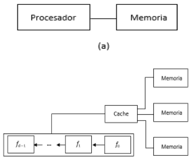
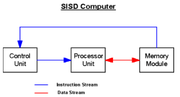
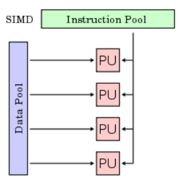
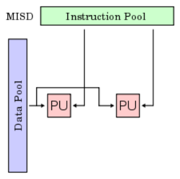

Las diferentes posibilidades existentes para desarrollar sistemas paralelos hacen que una clasificación definitiva sea
complicada. Se muestra una clasificación clásica propuesta por Flynn, que se basa en el ciclo de instrucciones y en el
flujo de dato.

Taxonomía de FLYNN:
En 1966 Flynn propuso una clasificación generalista de las computadoras adoptando como criterio el flujo de instrucciones y
el flujo de datos que en ellos se desarrolla. La clasificación de Flynn es la siguiente:
SISD::
Instrucción única, datos únicos. Las instrucciones se ejecutan secuencialmente pero pueden estar solapadas
en las etapas de ejecución.

SIMD:
Instrucción única, datos múltiples. Son los procesadores matriciales en los que existen varias unidades
de procesamiento trabajando sobre flujos de datos distintos pero ejecutando la misma instrucción.

MISD:
Instrucción múltiple, datos únicos. Este se caracteriza por la existencia de varias unidades de procesamiento cada una
ejecutando una instrucción diferente pero sobre el mismo flujo de datos.

MIMD:
Es una técnica empleada para lograr paralelismo. Las máquinas que usan MIMD tienen un número de procesadores que funcionan
de manera asíncrona e independiente.